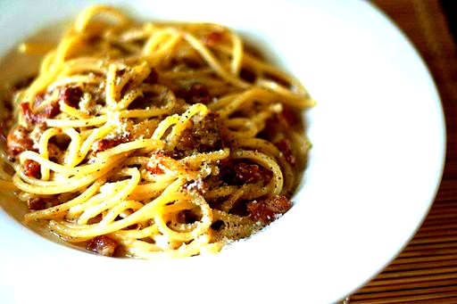

Magna Pasta
Pasta alla gricia

Description
Pasta alla gricia is a typical first course of Roman cuisine, it has very ancient origins, from the shepherds
of Latium that today is served in all the trattorias of Rome, it is the ancient version of Amatriciana, which
is why it is also called "white amatriciana" because without tomatoes.
It consists of rigatoni or spaghetti stir-fried and seasoned with pecorino cheese, pepper and pasta cooking water
in the manner of Cacio e pepe but with the addition of crispy guanciale bacon!
Ingredients
- 320gr rigatoni (or spaghetti)
- 250gr guanciale (1 cm thick slice to cut into strips)
- 80gr of pecorino romano cheese
- black pepper to grind
- salt
Steps
- First place plenty of water for the pasta to boil with salt.
- Then cut the guanciale into 1 cm strips and heat a frying pan making it caramelized without oil! You will see that slowly all the fat will come out of the guanciale and the latter will be crispy.
- Finally drain it into a small bowl.
- Finally grate the pecorino cheese and add 1 tablespoon of the pasta cooking water, which is not boiling but which you have allowed to cool. This step is essential so that the pecorino paste "does not tear" mix well to create a doughy mixture
- Then cook the pasta halfway through, drain it directly into the pan with the guanciale fat and begin risotto with a little of the rigatoni cooking water.
- Add just enough cooking water for al dente cooking; with about 2 minutes to go, add almost all the guanciale (leave 2 to 3 tablespoons for garnish)
- Finally remove the pan with the pasta from the heat the pasta, let the temperature drop 30 seconds and add the pecorino paste, stir well, adding if necessary a couple of tablespoons of cooking water for more creaminess.
- Finally serve with scattered crispy pancetta and possibly more grated pecorino!
Here is your pasta alla gricia ready!